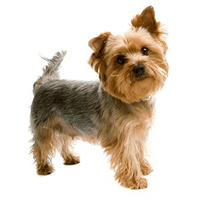

Versatility
Yorkies are not good for much else other than being a housepet, and it is notoriously difficult to train, often requiring crate-training.

The Yorkie is a small sized breed. It is prized for its appearence and small size. With an average height of 8 inches, it is very easy to carry as it will fit in most bags or purses. It requires little physical activity and is content with a walk or 2 a day.
Yorkies are not good for much else other than being a housepet, and it is notoriously difficult to train, often requiring crate-training.
Yorkies are relativley easy to groom. They have short fur, and often do not run outside like other dogs.